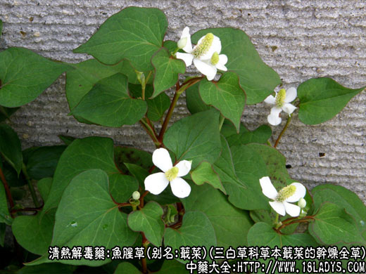
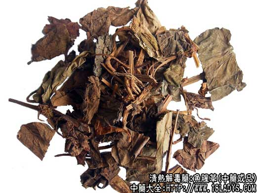
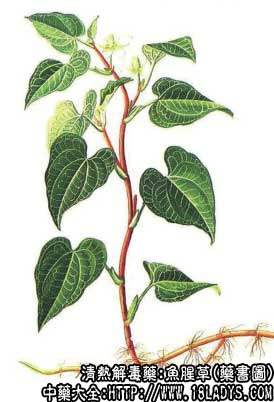

鱼腥草为少常用中药，始载《名医别录》列为下品，原名蕺(jí) 。
别名：蕺菜。
来源：为三白草科多年生草本植物蕺菜的干燥全草。
产地：主产于江苏、浙江、湖南、江西等省，江南地区均有分布。野生。
性状鉴别：为带有叶片及少数花果穗的干燥茎枝，茎类圆柱形至扁方形，长约10～30厘米，直径约2～4毫米。黄棕色，具纵沟纹及棱脊，有节。叶互生，叶片心形，全缘，绿红褐色，长宽基本相同，约3～5厘米，上表面有多数凸起的小点，叶柄长约2厘米，干燥后多皱缩破碎。偶带有花穗或果穗，穗暗棕色，鱼腥草，味淡。
以茎叶整齐，全体红褐色者为佳。
主要成分：含挥发油，其中主要成分为葵酰乙醛、月桂醛等；又含檞皮甙；并含氯化钾和硫酸钾。
药理作用：清湿热、消痈肿。现已证实其原理为抗菌和利尿。
1、抗菌。对金黄色葡萄球菌有十分强烈的抑制作用，在稀释至1：40000浓度下仍能抑菌。
2、抗病毒。其药液有抑制流感病毒致细胞病变作用，延缓病毒致细胞病变作用。
3、利尿。有效成分为檞皮甙和钾盐。
此外，檞皮甙能使血管扩张，对于消炎、消肿有一定作用。
炮制：切咀、生用。
性味：辛、微寒。
归经：入肺经。
功能：清热解毒消肿。
主治：肺痈、吐脓血、久疟。外敷、熏洗痈肿恶疮。
临床应用：为治疗肺痈的常用药。也用于治疗肺炎和试用于肺癌。
1、为治疗肺痈（肺脓疡）和大叶性肺炎。有发热、咳嗽咳吐腐臭脓痰者，常配桔梗，加强祛痰作用，方如鱼腥草桔梗汤。病情较重者再加配苇茎汤，日中还可用鱼腥草煎汤代茶，加强消炎利尿作用。
2、试用于治疗肺癌，配冬葵子、土茯苓等，方如鱼腥草冬葵子汤，效果待一步观察。又治疗肾炎水肿、小便不利，也可试用此方。
此外，治湿热下泻（急性肠炎、痢疾）也可用鱼腥草。
用量：15～30g。不宜久煎。
处方举例：1、鱼腥草桔梗汤：鱼腥草30g、桔梗15g，水煎服，或研末冲服。
2、鱼腥草冬葵子汤：鱼腥草18g、冬葵子30g、土茯苓30g、旱莲草18g、飞天蠄蟧18g、甘草0.5g，水煎服（注：飞天蠄蟧为广东草药）。